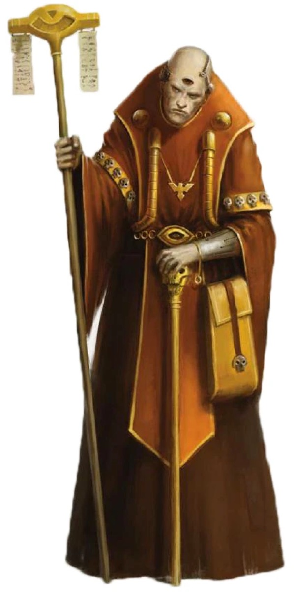

Paternoval Envoy
| Paternoval Envoy | |
|---|---|
| Representative of the Navis Nobilite | |
The wreathed eye of the Navis Nobilite | |
| Incumbent | Kadak Mir since c. 000.M42 |
| Style | Envoy; High Lord |
| Member of | High Lords of Terra (permanent seat) |
| Reports to | The Paternova |
| Seat | Palace of the Navigators, Terra |
| Appointer | The Paternova, with the agreement of the great houses |
| Formation | By the late Great Crusade, M30 |
| Inaugural holder | Bolam Haardiker (earliest recorded) |
The Paternoval Envoy is the representative of the Navis Nobilite, the noble houses of Navigators, among the High Lords of Terra. The Envoy is a Navigator appointed by the Paternova, the head of all the houses, who may never leave the Palace of the Navigators on Terra once installed. The Envoy is therefore the Paternova's voice to the Imperium: in the Senatorum Imperialis, at the courts of Terra and in the negotiations with the Imperial Navy, the Adeptus Mechanicus and the merchant fleets that depend on Navigators to cross the Warp.[1][2]
The Envoy is usually drawn from the most powerful house. When the great houses cannot agree, they sometimes choose a member of a weaker house who poses no threat to any of them, and such compromise Envoys have often proved more independent than their electors expected. The office is first recorded on the Council of Terra during the Horus Heresy, held by Bolam Haardiker, and in the Era Indomitus is held by Kadak Mir.[2][3]
Powers and duties
[edit]The Envoy has no authority over the Navigators themselves, which belongs to the Paternova and the heads of the houses. The office's power lies in what the Navis Nobilite controls. Without Navigators no ship of the Imperium can make a long passage through the Warp, and an Envoy who speaks of withholding them is heard with attention. The Envoy defends the houses' charters, their right to guide ships for a price, and their exemption from much of Imperial law, and represents them in disputes with the Navy and the Rogue Trader dynasties.[2]
The Envoy also manages the household of the Paternova beyond the palace walls, and is the chief of the Paternova's servants. The staff and soldiers of the palace are drawn from the Paternova's own house and are replaced at each succession, so a change of Paternova usually brings a change of Envoy.[2]
History
[edit]
During the Great Crusade (c. 798.M30 – 000.M31) the Paternova sat on the Emperor's War Council in person. The office of Envoy appears in the records of the Council of Terra after the Triumph of Ullanor in 000.M31, when the Emperor gave civil government to a council of mortal officials. Its holder through the Horus Heresy (005–014.M31) was Bolam Haardiker, who sat on the Grand Council of Reconstruction in 014.M31.[4]
In the War of the Beast (544–546.M32) the Envoy was Helad Gibran. Dovrian Ofar held the office later in the same millennium. Sarius Gorki held the office in the 41st millennium, at a time when the great houses' rivalry over the seat was described by observers on Terra as the usual reason for choosing an Envoy from a lesser house.[5][2]
At the Thirteenth Black Crusade in 999.M41 the Envoy was Uila Lamma. When Roboute Guilliman restored the council during the Indomitus Crusade, c. 000.M42, the seat was held by Kadak Mir, who did not join the Hexarchy and remains in office.[3]
List of holders
[edit]| Holder | Tenure | Notes |
|---|---|---|
| Bolam Haardiker | c. 000 – after 014.M31 | Council of Terra; Grand Council of Reconstruction |
| Helad Gibran | By 544 – 546.M32 | Envoy in the War of the Beast |
| Dovrian Ofar | M32 (after 546.M32)[a] | |
| Sarius Gorki | M41 (year unrecorded) | |
| Uila Lamma | By 999.M41 – c. 000.M42 | Envoy at the Fall of Cadia |
| Kadak Mir | c. 000.M42 – present | Incumbent |
Timeline
[edit]| Date | Event |
|---|---|
| 000.M31 | Council of Terra created; the Envoy speaks for the Navigators on it |
| 014.M31 | Bolam Haardiker on the Grand Council of Reconstruction |
| 544–546.M32 | Helad Gibran sits through the War of the Beast |
| 999.M41 | Uila Lamma is Envoy at the Fall of Cadia |
| c. 000.M42 | Kadak Mir sits on Guilliman's restored council |
See also
[edit]Notes
[edit]- ^ Ofar's tenure is recorded only as M32. Since Gibran held the office in 544–546.M32, Ofar's term is placed after it; the order is inferred.
References
[edit]- ^ Codex Imperialis (rev. 980.M41). Adeptus Terra.
- ^ a b c d e Genealogia Navigatorum (sealed). Palace of the Navigators, Terra.
- ^ a b Records of the Indomitus Crusade (ongoing). Office of the Lord Commander.
- ^ Chronicles of the Heresy (sealed). Logos Historica Verita, Terra.
- ^ Annals of the War of the Beast (M32, revised M41). Administratum Archive, Terra.